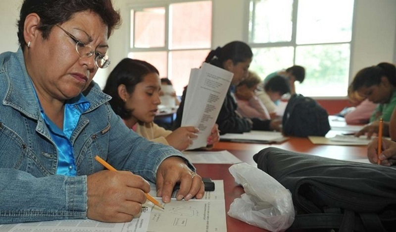

PROGRAMA EDUCATIVO
Acompañamos a jóvenes y adultos que desean retomar sus estudios y reconstruir nuevas oportunidades.
SOBRE EL PROGRAMA
“Volvé a Estudiar” acompaña a personas que abandonaron la escuela por motivos económicos, familiares o sociales.
A través de tutorías, apoyo emocional y acompañamiento pedagógico, ayudamos a que cada estudiante pueda recuperar la confianza y continuar su formación.

IMPACTO DEL PROGRAMA
Beneficiarios directos
Países activos
Retomó estudios formales
Tutorías realizadas
CÓMO TRABAJAMOS
Identificamos jóvenes y adultos que desean volver a estudiar.
Diseñamos un acompañamiento adaptado a cada situación.
Brindamos tutorías y herramientas para fortalecer el aprendizaje.
Realizamos seguimiento continuo para evitar nuevos abandonos.
Con tu ayuda podemos acompañar a más personas a reconstruir su futuro educativo.
Apoyar este programa